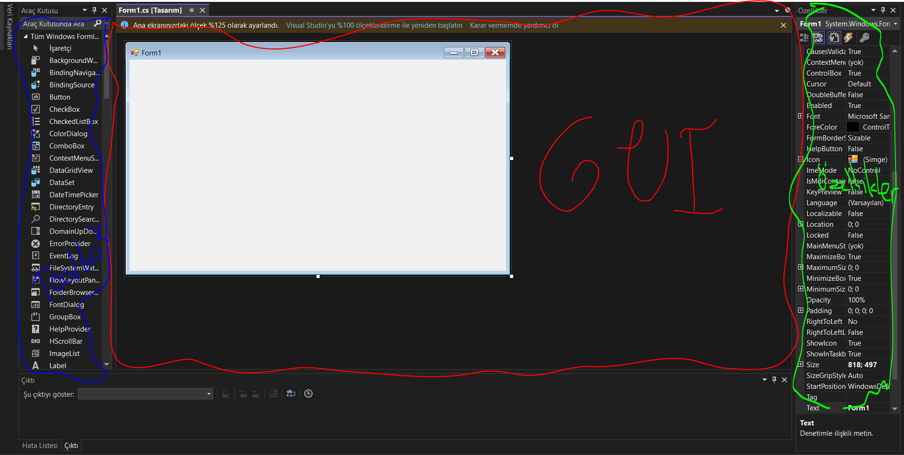

Pencere, bilgisayar yazılımlarında kullanıcının grafik arayüzle etkileşime girebildiği bileşenlerdir.
Pencerelerin olmadığı dönemlerde, insanlar siyah-beyaz ekranlarda yalnızca yazılarla etkileşime girerdi. Pencereler sayesinde yazılarla etkileşim daha kolay ve pratik hale geldi.
C# programlama dilinde pencere sistemi System.Windows.Forms kütüphanesi ile mümkün olur.
Visual Studio ile Form Tasarlama
Visual Studio sayesinde görsel olarak form tasarlamak mümkündür. Form tasarlamak için Visual Studio’da form projesi açmamız gerekiyor.
Proje Açma
Önce Visual Studio’yu açalım. Ardından proje kısmında ‘Windows Forms Uygulaması (.NET Framework)’ aratarak Windows Form uygulamamızı oluşturalım. Projemizin adını girip projemizi oluşturalım.
Arayüzü Tanıyalım

GUI
GUI, kullanıcının gördüğü grafik arayüzdür. Toolbox’tan istediğimiz bileşeni sürükleyip bıraktığımızda penceremizde otomatik olarak oluşur.
Toolbox
Toolbox, GUI’ya ekleyeceğimiz bileşenleri arayıp penceremize ekleyebileceğimiz bileşenleri içerir.
Özellikler Penceresi
Özellikler penceresi, bileşenlerimizin özelliklerine (örneğin Text, Size, Location) erişebileceğimiz penceredir.
Bileşenlerin Özellikleri
Özellikler penceresindeki özelliklere bakalım.
Enabled
Enabled, bileşenin kullanılabilirliğini açıp kapatan bir özelliktir.
X.Enabled = true; // veya false
BackColor
BackColor, bileşenin arka plan rengini değiştirir.
using System.Drawing;
X.BackColor = Color.White;
Cursor
Cursor, mouse imlecinin bileşenin üstüne geldiğinde imlecin görünümünü değiştirir.
using System.Windows.Forms;
X.Cursor = Cursors.Hand;
Font
Font, bileşenin yazıya sahip olması durumunda yazı stilini değiştirir.
using System.Drawing;
X.Font = new Font("Arial", 14, FontStyle.Bold);
ForeColor
ForeColor, bileşenin yazıya sahip olması durumunda yazının rengini değiştirir.
using System.Drawing;
X.ForeColor = Color.White;
RightToLeft
RightToLeft, bileşenin yazıya sahip olması durumunda yazıları bileşenin solunda veya sağında başlatır.